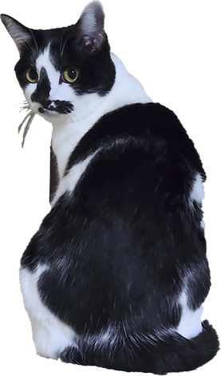

大分県大分市生まれ
大分県立鶴崎工業高等学校 産業デザイン科卒業。
大分市内の看板製作会社にてIllustratorを使用した業務に5年間従事。
オーストラリア、ニュージーランドにて各１年間ワーキングホリデーを経験。
在宅で親の介護を行いながら、多種多様な企業にて事務、接客販売、英文事務などの業務に携わる。
2025年5月より職業訓練校にてWebデザインについて学習し、長年の夢であったWebデザイナーを目指し活動中。
趣味は旅行。少しでも時間があれば、一人で海外旅行に出かけるほどの旅好き。
保護猫「くるり」に愛されながら、日々の生活を楽しんでいる。
スキル
言語
資格
普通自動車第一種運転免許（現：8t限定中型）
Photoshopクリエイター能力認定試験 エキスパート
Illustratorクリエイター能力認定試験 エキスパート
Webクリエイター能力認定試験 エキスパート